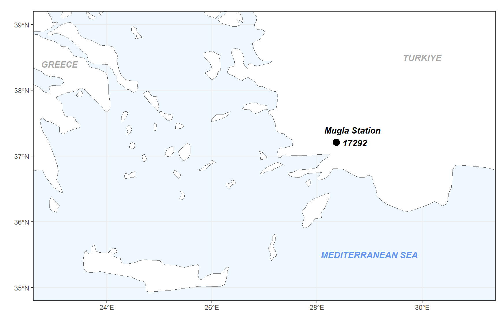
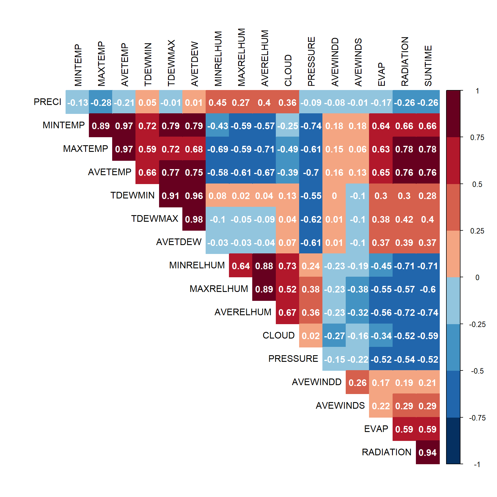
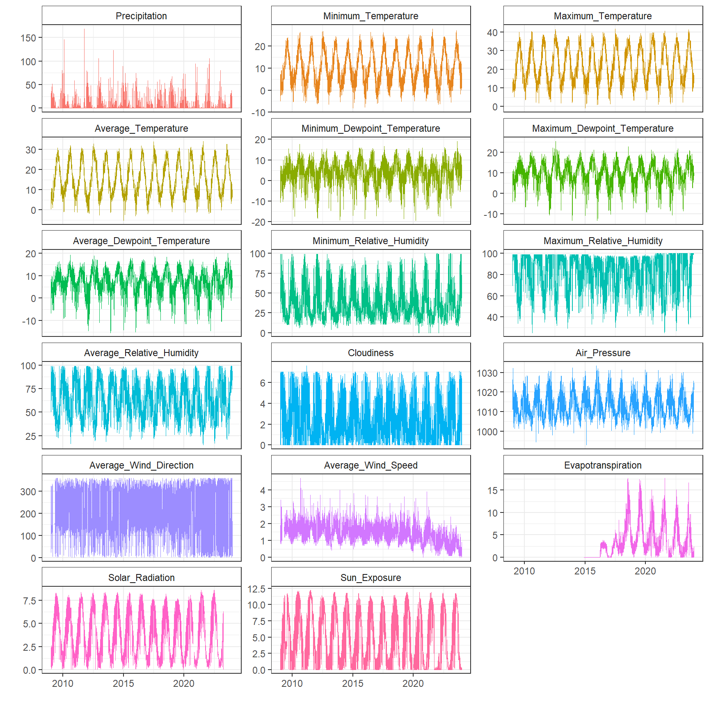
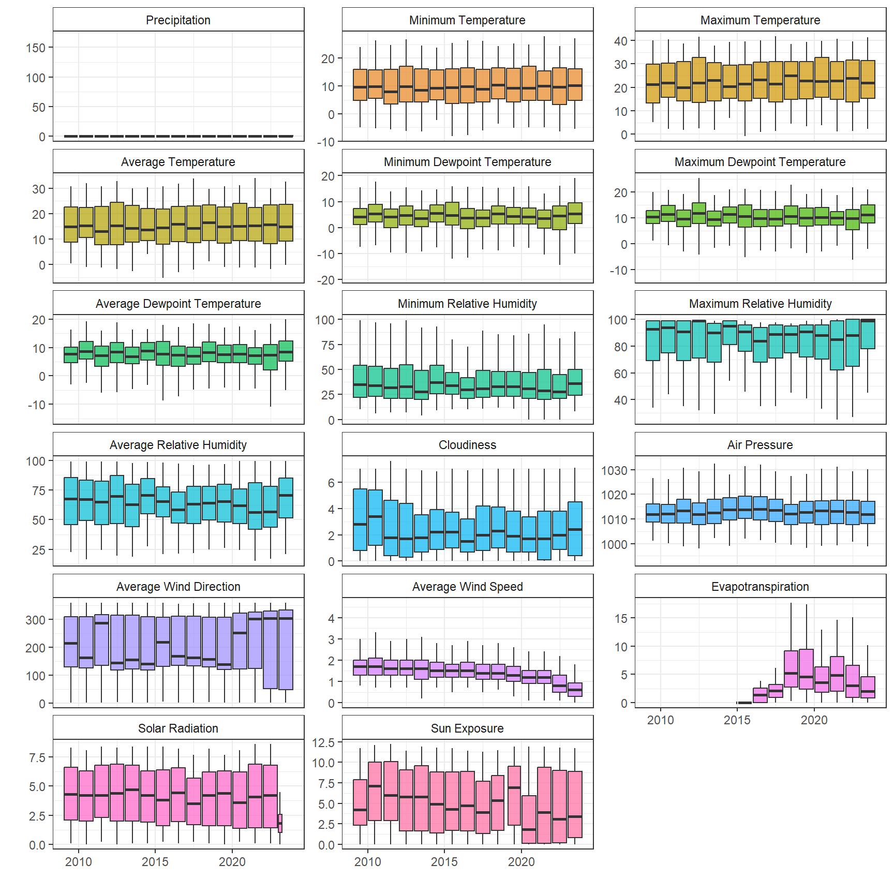
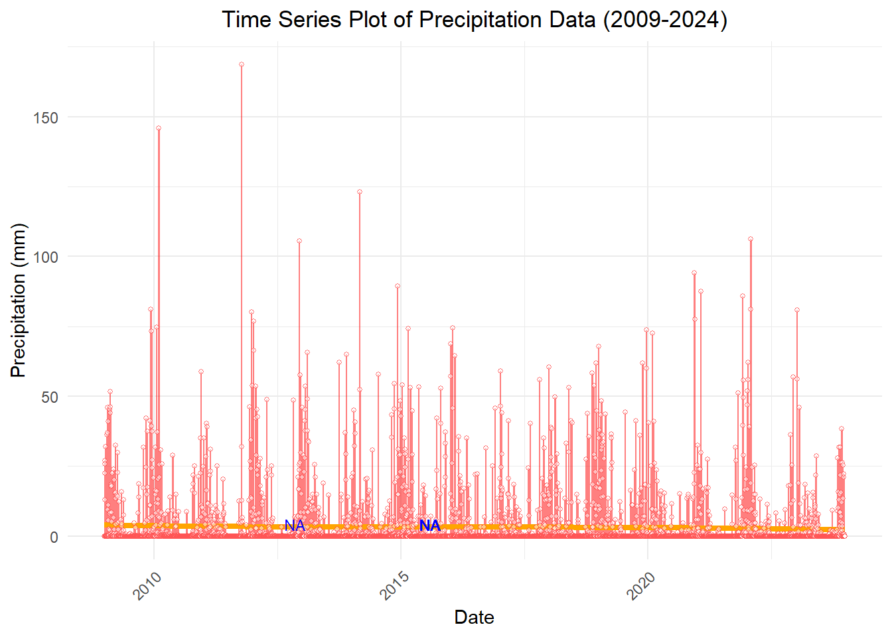
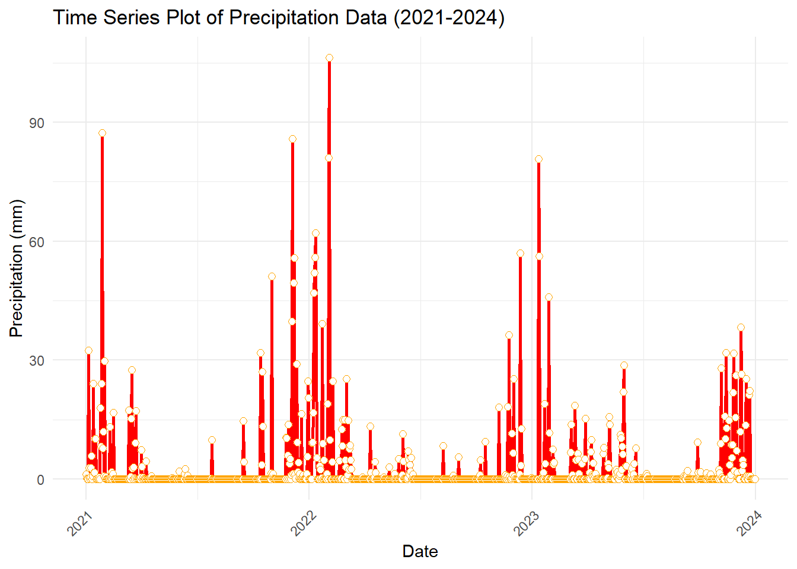
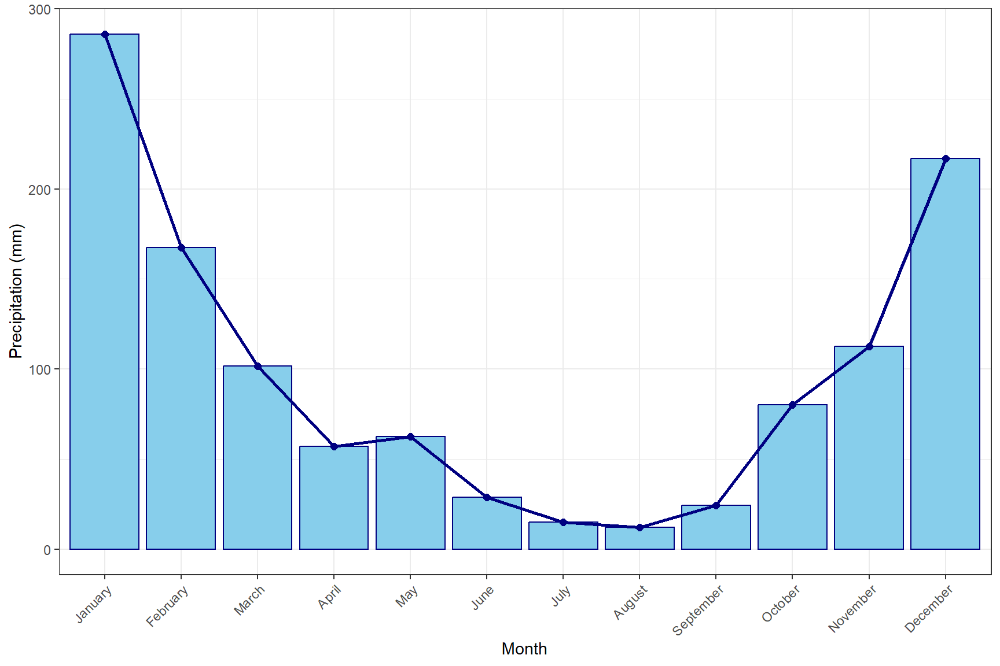

library(readxl)
library(tidyverse)
library(lubridate)
library(corrplot)
library(rnaturalearth)
library(sf)Daily Rainfall Modelling using Lasso, Ridge and Elastic-Net Regressions in one of the automated-weather observation station in Mugla Province of Türkiye
1 Introduction
Data period is between 01.01.2009 and 31.12.2023 for Mugla Station (17292). Elevation of the station is 646 meter.
2 Works in R
2.1 Uploading Necessary Packages
2.2 Study Location
rnaturalearth::ne_countries(scale='medium',returnclass = 'sf') |>
ggplot() + geom_sf(fill = "white") +
geom_point(aes(x=28.3668,y=37.2095),size=4) + labs(x="",y="") +
coord_sf(crs = st_crs(4326), xlim = c(23, 31), ylim = c(35,39)) +
theme_bw() +
theme(legend.position = "none",
panel.background = element_rect(fill = 'aliceblue')) +
annotate(geom="text", x=29, y=35.5, label="MEDITERRANEAN SEA",
color="cornflowerblue", fontface = "bold.italic", size=4) +
annotate(geom="text", x=30, y=38.5, label="TURKIYE",
color="darkgray", fontface = "bold.italic", size=4) +
annotate(geom="text", x=23.1, y=38.4, label="GREECE",
color="darkgray", fontface = "bold.italic", size=4) +
annotate(geom="text", x=28.7, y=37.3, label="Mugla Station \n 17292",
color="black", fontface = "bold.italic", size=4)
2.3 Data Handling
files<- list.files(paste0(here::here(),"/DATA"), pattern = "xlsx")
listem<- list()
missdates<- list()
for(i in 1:length(files)) {
listem[[i]] <- read_excel( paste0(here::here(),"/DATA/", files[i]))
listem[[i]] <- listem[[i]][ ,-c(1,2)]
listem[[i]]<-
listem[[i]] |>
mutate(DATE= as.Date(with(listem[[i]], paste(YEAR,MONTH,DAY,sep="-")),"%Y-%m-%d")) |>
complete(DATE = seq(as.Date("2009-01-01"),
as.Date("2023-12-31"), by = "day"))
listem[[i]] <- listem[[i]] [,-c(2:4)]
missdates[[i]]<- listem[[i]][which(is.na(listem[[i]] [,2] )),]
}
df<- listem[[1]]
for(i in 1:(length(files)-1)) {
df <- merge(df, listem[[i+1]], by = "DATE", all = TRUE)
}
write.table(df, "merge.txt", row.names = FALSE, quote = FALSE, sep = "\t")2.4 Descriptive Statistics
head(df) DATE PRECI MINTEMP MAXTEMP AVETEMP TDEWMIN TDEWMAX AVETDEW MINRELHUM
1 2009-01-01 0.0 -3.6 7.3 1.1 -10.8 -4.4 -6.9 39
2 2009-01-02 0.0 -4.9 7.4 0.4 -5.3 4.2 -0.7 62
3 2009-01-03 13.0 4.3 8.4 6.2 4.4 8.2 6.6 77
4 2009-01-04 22.6 6.8 9.9 7.8 6.7 9.3 7.9 99
5 2009-01-05 27.0 7.2 12.1 8.7 7.1 10.0 8.4 86
6 2009-01-06 25.8 5.3 11.2 7.8 4.8 10.8 6.8 94
MAXRELHUM AVERELHUM CLOUD PRESSURE AVEWINDD AVEWINDS EVAP RADIATION SUNTIME
1 69 50.2 0.0 1025.7 316 1.9 NA 2.1 3.2
2 96 81.4 4.7 1025.3 126 0.8 NA 1.0 0.2
3 99 96.0 7.0 1020.2 120 1.0 NA 0.3 0.0
4 99 99.0 7.0 1016.3 117 1.2 NA 1.0 0.6
5 99 98.3 7.0 1014.2 116 1.1 NA 1.1 0.5
6 99 98.8 6.9 1011.1 24 1.7 NA 0.6 0.1summary(df) DATE PRECI MINTEMP MAXTEMP
Min. :2009-01-01 Min. : 0.000 Min. :-8.20 Min. :-0.90
1st Qu.:2012-10-01 1st Qu.: 0.000 1st Qu.: 4.40 1st Qu.:14.60
Median :2016-07-01 Median : 0.000 Median : 9.50 Median :22.10
Mean :2016-07-01 Mean : 3.192 Mean :10.22 Mean :22.59
3rd Qu.:2020-03-31 3rd Qu.: 0.200 3rd Qu.:16.10 3rd Qu.:30.90
Max. :2023-12-31 Max. :168.600 Max. :27.90 Max. :41.70
NA's :5
AVETEMP TDEWMIN TDEWMAX AVETDEW
Min. :-5.30 Min. :-19.400 Min. :-13.30 Min. :-15.400
1st Qu.: 8.90 1st Qu.: 0.900 1st Qu.: 7.20 1st Qu.: 4.500
Median :14.90 Median : 4.500 Median : 10.30 Median : 7.700
Mean :15.77 Mean : 4.045 Mean : 10.07 Mean : 7.312
3rd Qu.:23.10 3rd Qu.: 8.000 3rd Qu.: 13.80 3rd Qu.: 11.100
Max. :34.10 Max. : 19.100 Max. : 25.50 Max. : 19.900
MINRELHUM MAXRELHUM AVERELHUM CLOUD
Min. : 0.00 Min. : 25.00 Min. :15.00 Min. :0.000
1st Qu.: 22.00 1st Qu.: 71.00 1st Qu.:47.40 1st Qu.:0.700
Median : 32.00 Median : 91.00 Median :64.20 Median :2.000
Mean : 37.65 Mean : 83.66 Mean :63.92 Mean :2.511
3rd Qu.: 49.00 3rd Qu.: 98.00 3rd Qu.:81.10 3rd Qu.:4.100
Max. :100.00 Max. :100.00 Max. :99.30 Max. :7.600
PRESSURE AVEWINDD AVEWINDS EVAP
Min. : 992.9 Min. : 1.0 Min. :0.000 Min. : 0.000
1st Qu.:1008.4 1st Qu.:123.0 1st Qu.:1.000 1st Qu.: 0.600
Median :1012.9 Median :176.0 Median :1.400 Median : 2.500
Mean :1013.3 Mean :209.3 Mean :1.418 Mean : 3.591
3rd Qu.:1017.4 3rd Qu.:315.0 3rd Qu.:1.800 3rd Qu.: 5.300
Max. :1033.5 Max. :360.0 Max. :4.700 Max. :17.700
NA's :111 NA's :111 NA's :2289
RADIATION SUNTIME
Min. :0.000 Min. : 0.000
1st Qu.:1.700 1st Qu.: 1.300
Median :4.000 Median : 4.700
Mean :4.124 Mean : 5.138
3rd Qu.:6.400 3rd Qu.: 8.800
Max. :8.600 Max. :12.200
NA's :377 NA's :139 2.5 Visualization of the Data
paletr<- c("#053061", "#2166AC" ,"#4393C3" ,"#92C5DE" ,
"#F4A582", "#D6604D" ,"#B2182B", "#67001F")
corrplot(round(cor(df[,2:18], method = "pearson", use = "complete.obs"),2),
method="color", col=paletr,
type="upper",
addCoef.col = "white",
tl.col="black", insig = "blank",
diag=FALSE )
variable_names <-
c("Precipitation", "Minimum Temperature", "Maximum Temperature",
"Average Temperature", "Minimum Dewpoint Temperature",
"Maximum Dewpoint Temperature", "Average Dewpoint Temperature",
"Minimum Relative Humidity", "Maximum Relative Humidity",
"Average Relative Humidity", "Cloudiness", "Air Pressure",
"Average Wind Direction", "Average Wind Speed",
"Evapotranspiration", "Solar Radiation", "Sun Exposure")
colnames(df) <- append("Date", variable_names)
df_plot<-
df |>
pivot_longer(
cols = -c(1),
values_drop_na = FALSE)
df_plot$name <- factor(df_plot$name, levels = colnames(df)[2:18])
ggplot(df_plot, aes(x= Date, y=value,color=name)) +
geom_line(size=0.1) + facet_wrap(~name, scales = "free_y", ncol=3) +
theme_bw() + labs(x=" ",y=" ") +
theme(legend.position = "none",
strip.background = element_rect(fill="white")) 
ggplot(df_plot, aes(x= Date, y=value, fill=name, group=year(Date))) +
geom_boxplot(outlier.shape = NA, alpha=0.7) + facet_wrap(~name, scales = "free_y", ncol=3) +
theme_bw() + labs(x=" ",y=" ") +
theme(legend.position = "none",
strip.background = element_rect(fill="white")) 
2.6 EDA of the Precipitation
2.6.1 Missing Value
head(df) Date Precipitation Minimum Temperature Maximum Temperature
1 2009-01-01 0.0 -3.6 7.3
2 2009-01-02 0.0 -4.9 7.4
3 2009-01-03 13.0 4.3 8.4
4 2009-01-04 22.6 6.8 9.9
5 2009-01-05 27.0 7.2 12.1
6 2009-01-06 25.8 5.3 11.2
Average Temperature Minimum Dewpoint Temperature Maximum Dewpoint Temperature
1 1.1 -10.8 -4.4
2 0.4 -5.3 4.2
3 6.2 4.4 8.2
4 7.8 6.7 9.3
5 8.7 7.1 10.0
6 7.8 4.8 10.8
Average Dewpoint Temperature Minimum Relative Humidity
1 -6.9 39
2 -0.7 62
3 6.6 77
4 7.9 99
5 8.4 86
6 6.8 94
Maximum Relative Humidity Average Relative Humidity Cloudiness Air Pressure
1 69 50.2 0.0 1025.7
2 96 81.4 4.7 1025.3
3 99 96.0 7.0 1020.2
4 99 99.0 7.0 1016.3
5 99 98.3 7.0 1014.2
6 99 98.8 6.9 1011.1
Average Wind Direction Average Wind Speed Evapotranspiration Solar Radiation
1 316 1.9 NA 2.1
2 126 0.8 NA 1.0
3 120 1.0 NA 0.3
4 117 1.2 NA 1.0
5 116 1.1 NA 1.1
6 24 1.7 NA 0.6
Sun Exposure
1 3.2
2 0.2
3 0.0
4 0.6
5 0.5
6 0.1df_pre=df[,c(1,2)]
head(df_pre) Date Precipitation
1 2009-01-01 0.0
2 2009-01-02 0.0
3 2009-01-03 13.0
4 2009-01-04 22.6
5 2009-01-05 27.0
6 2009-01-06 25.8#Calculating the number of null values if there is one.
pre_null_values= sum(is.na(df_pre$Precipitation))
print(paste("Number of Null Values in Precipitation Column:",pre_null_values))[1] "Number of Null Values in Precipitation Column: 5"2.6.2 Time Series Plot of the Precipitation Data
missing_date= df_pre$Date[is.na(df_pre$Precipitation)]
missing_date[1] "2012-11-09" "2015-08-03" "2015-08-04" "2015-08-05" "2015-08-06"library(ggplot2)
#Time Series Plot of Precipitation (with Missing Data Highlighted (2009-2024)
ggplot(df_pre, aes(x = Date, y = Precipitation)) +
geom_line(color = "red", size = 0.5,alpha=0.5) + # Continuous line plot
geom_smooth(method = "loess", se = FALSE, color = "orange", size = 1.5) + #Trend line
geom_point(aes(color = !is.na(Precipitation)), size = 1,alpha=0.5, shape = 21, fill = "white", show.legend = FALSE) +
geom_text(data = subset(df_pre, is.na(Precipitation)), aes(label = "NA", y = 0), vjust = -0.5, color = "blue",size= 3) + # Marking NAs
scale_color_manual(values = c("black", "red")) + # Red points for non-missing data
labs(title = "Time Series Plot of Precipitation Data (2009-2024)",
x = "Date",
y = "Precipitation (mm)") +
theme_minimal() +
theme(axis.text.x = element_text(angle = 45, hjust = 1),
plot.title = element_text(hjust = 0.5)) #Centering the title
#Time Series Plot of Precipitation (with Missing Data Highlighted (2021-2024)
df_pre_p1= filter(df_pre, Date>= as.Date("2021-01-01"))
ggplot(df_pre_p1, aes(x = Date, y = Precipitation)) +
geom_line(color = "red", size = 1) + # Plotting the precipitation data
geom_point(aes(color = !is.na(Precipitation)), size = 2, shape = 21, fill = "white", show.legend = FALSE) +
scale_color_manual(values = c("orange", "red")) + # Use red points to mark non-missing data
labs(title = "Time Series Plot of Precipitation Data (2021-2024)",
x = "Date",
y = "Precipitation (mm)") +
theme_minimal() +
theme(axis.text.x = element_text(angle = 45, hjust = 1)) # Improve readability of x-axis labels
According to the time series plot of the precipitation, there is no specific long-term trend (orange line) over the years. 4 of the 5 null values are found sequentially and one of them is located in “2012-11-09”. The plot exhibits high volatility and also might be observed some seasonality (clearly observed in plot 2).
2.6.3 Seasonality Analyze
#Seasonal Decomposition
#Mean Imputation for NA values
df_pre1=df_pre
mean_imput=mean(df_pre1$Precipitation,na.rm=TRUE)
df_pre1$Precipitation[is.na(df_pre1$Precipitation)]=mean_imput
df_pre_ts= ts(df_pre1$Precipitation, frequency = 365)
library(forecast)
library(tseries)
library(seasonal)
library(stats)
library(gridExtra)
library(grid)
result_stl <- stl(df_pre_ts, s.window = "periodic")
plot(result_stl)
ljung_box_result= Box.test(df_pre1$Precipitation, lag= 365, type= "Ljung-Box")
print(ljung_box_result)
Box-Ljung test
data: df_pre1$Precipitation
X-squared = 4280.5, df = 365, p-value < 2.2e-16Ho: No auto correlation for lags=365
H1: Some auto correlation for lags=365
Since the p-value is less than 0.05 we suggest that there is some autocorrelation for lags=365 in Precipitation data which is a strong indication of seasonality. Also, we can clearly observe seasonality in the Seasonality Component plot.
2.6.4 Stationarity Analyze
adf_test= adf.test(df_pre1$Precipitation, alternative = "stationary")
print(adf_test)
Augmented Dickey-Fuller Test
data: df_pre1$Precipitation
Dickey-Fuller = -12.942, Lag order = 17, p-value = 0.01
alternative hypothesis: stationaryHo: The time series is non-stationary
H1: The time series is stationary
Since our p-value is less than 0.05, it can be concluded that the time series is stationary. That means that the mean, variance and autocorrelation of the series do not change over the years. Since we satisfied the assumption of stationary we can perform Statistical Models as well as Machine Learning Approaches.